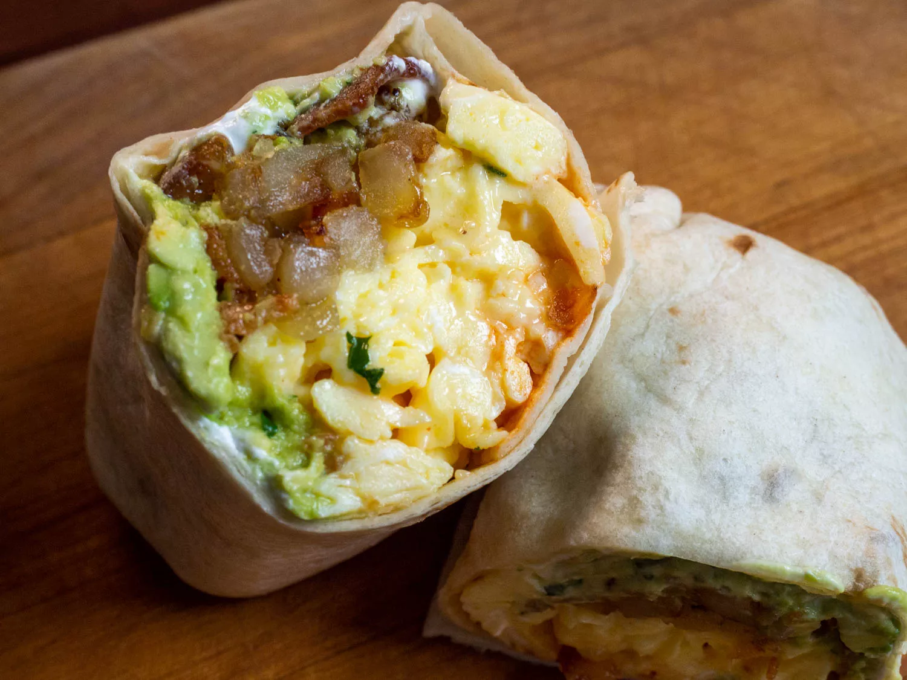

Bacon, Egg, and Cheese Breakfast Burritos

Description
By Daniel Gritzer, from Serious Eats
We salute whoever first had the idea to stuff all of breakfast into a single, large flour tortilla (credit, in case you're curious, seems to go to New Mexico's Tia Sophia's restaurant, which put a "breakfast burrito" on their menu in the 1970s). With that one creative innovation, an entire morning meal can be eaten using just one hand, potentially on the go—though let's be honest, a good one is likely to create enough of a mess to make it less portable than your average breakfast sandwich. -Daniel Gritzer
Ingredients
- 4 large eggs
- Kosher salt
- 1/4 cup (60ml) canola, vegetable, or other neutral oil
- 1 pound (450g) Russet potatoes (about 2 medium potatoes), peeled and cut into 1/2-inch dice
- 1/2 medium (8-ounce; 225g) yellow onion, cut into 1/2-inch dice
Freshly ground black pepper
- 1 tablespoon (15g) unsalted butter
- 4 rashers crisply cooked bacon, broken into pieces
- 2 ounces (55g) shredded cheddar cheese
- 2 large (10-inch) flour tortillas, warmed through on a dry griddle or cast iron pan
- 2 tablespoons (1 ounce; 30g) sour cream, divided
- 1/4 cup (2 ounces; 55g) guacamole, divided
- Hot sauce of your choice (optional)
Steps
- In a medium bowl, whisk eggs with a large pinch of salt until homogenous and no visible egg whites remain. Set aside.
- In a medium cast iron or stainless steel skillet, heat oil over medium-high heat until shimmering. Add potatoes, season with salt, and cook, stirring only occasionally, until beginning to brown, about 8 minutes. Lower heat to medium, stir in onion, and continue to cook, stirring occasionally to prevent scorching, until potatoes are golden and crisp and onions are browned and tender, about 10 minutes longer. Season with additional salt and pepper to taste and set aside.
- In a medium nonstick skillet, melt butter over medium heat until foaming. Add eggs and cook, stirring constantly with a rubber spatula, until eggs have formed curds but are still runny, 1 to 2 minutes. Stir in cheese and continue to cook, stirring constantly, until cheese is melted and eggs are soft and fluffy, about 1 minute longer. Remove from heat.
- Working with one just-warmed tortilla at a time, lay tortilla on a work surface. Spread 1 tablespoon (15g) sour cream in a thin, even layer on center of tortilla, leaving about 2 inches of border on either side and 3 inches of border above and below. Top with 2 tablespoons (30g) guacamole and spread it around on top of the sour cream. Arrange half the bacon on top of the guacamole.
- Pile half the potatoes on top of the bacon, followed by half the eggs and cheese. Douse with as much hot sauce as you want.
- Fold the tortilla sides in over the filling. Then roll the bottom flap of tortilla up over the filling, holding the sides tight as you roll. Continue rolling until the burrito is sealed. Repeat with remaining tortilla and filling ingredients. Serve right away.